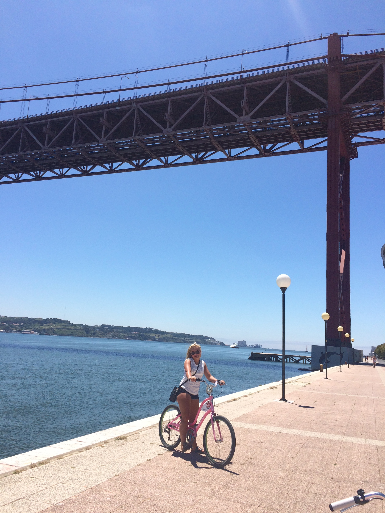
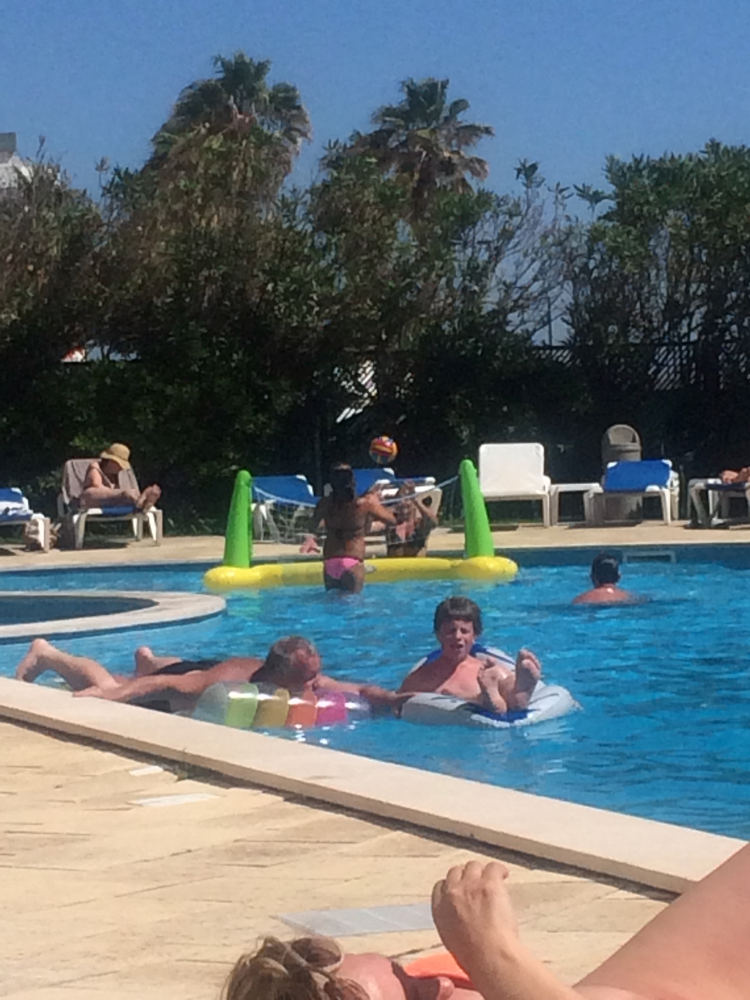

<b>Ferietur
Framsida
Rhodos
Polen
Tyskland
Portugal
I 2015 var eg saman med mamma, pappa, bror min og tanten min til Lisboa i Portugal. Der bada vi mykje, spesielt i havet. Eine dagen sykla vi frå der vi budde, litt utanfor Lisboa inn til sentrum. Vi leigde då syklar og det var veldig fine sykkelvegar som var lett å fylgje. Vi måtte også ta ei ferje på rundt 15 min. Utanom det var vi for det meste i nærområdet til hotellet, ved bassenget, havet eller i handlegata. Ein av dei siste kveldane vi var i handlegata tok eg henna-tattovering, og den kan du sjp på eine bilete under.


Eg anbefalar alle å reise til Lisboa då det var ein svært vakker by. Det er mykje ein kan oppleve og véret var veldig fint då vi har der vertfall. Det er supre sykkelløyper eller vegar som er tydeleg markerte, slik at ein veit kva ein driv med når ein ferdast på sykkel inn mot sentrum.
Her kan du lese meir om byen